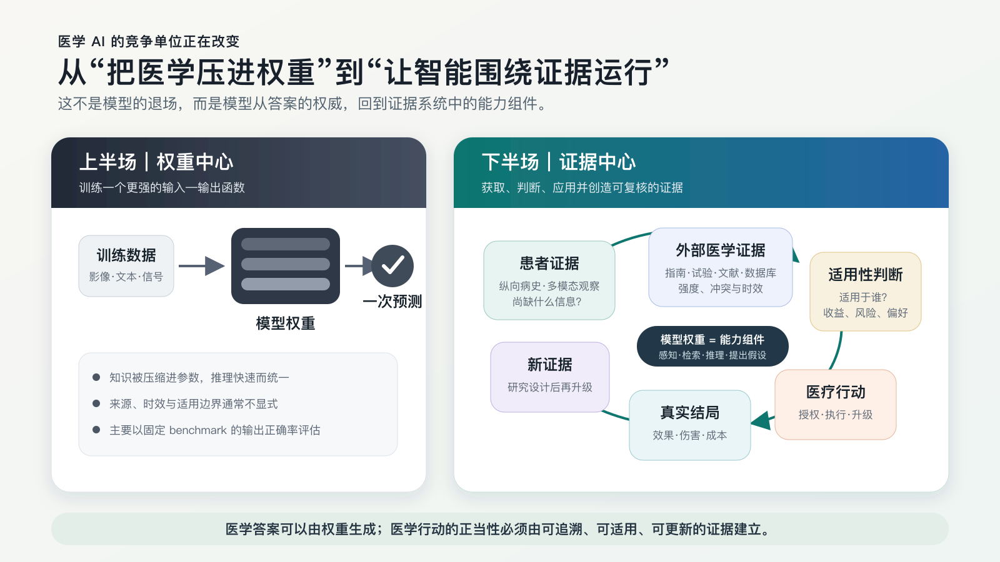
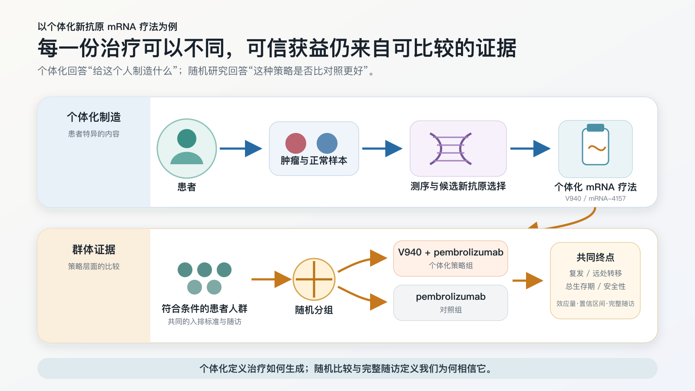
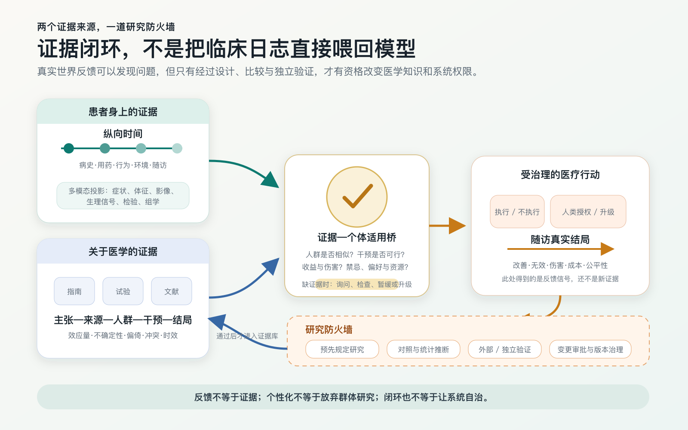

一、医学 AI 首先要遵循医学
医学怎样认识患者、形成和检验证据、选择行动并观察结局，AI 进入诊疗或研究以后，也要接受同样的约束。我所理解的医学 AI 下半场，正是让 AI 进入这条医学链条：诊疗时遵循证据，面对证据空白时参与新的研究。
过去十年的医学 AI 大多沿着训练和预测这条路径发展。影像模型从 CT 中预测病灶，生理信号模型从心电、脑电中识别异常和风险，病历模型预测诊断、预后或再次住院，医学大模型则用编码进权重的知识回答问题。输入和任务各不相同，共同点是把医学模式、知识和经验压进权重，再用这些权重作出预测。
这条路线已经带来许多进展，模型、数据和训练也会继续构成基础。纯靠权重会留下一个问题：判断依据往往已经被压缩进参数。模型可能给出正确答案，却很难同时说明结论来自哪项研究、研究针对什么人群、观察了什么结局，以及这些证据是否仍然有效、是否适用于当前患者。
模型给出的判断会直接影响检查和治疗，有时还会改变一个人的长期健康。判断这类输出是否可信，需要核对模型掌握的患者事实、所依据的外部证据、证据强弱及适用性，并追踪行动后的结局。
我用“权重预测”概括上半场，用“证据系统”概括下半场。上半场关注模型能否从输入直接给出正确预测。到了下半场，模型继续负责感知、抽取、检索和推理，患者事实、外部研究、适用性判断与结果验证也要留在系统里，供人查看和复核。判断由此沿着“患者状态—证据—行动—结局”展开。

这一区分来自医学自身的工作方式。先看这条链条的起点：医生面对的患者状态是什么。
二、医学行为从认识患者状态开始
从长远看，医学希望延长健康寿命，并尽量减轻疾病造成的痛苦和功能损失。具体到一次医疗行为，需要先理解行动前的患者状态，再选择检查、治疗或管理方式，希望把患者带向更好的健康状态。
一个人的真实健康状态无法被直接读取。医生和 AI 获得的是它在不同时间、不同尺度上的投影。
其中一个维度是时间。一次门诊看到的是一个切片，病史提供的是一段轨迹；再把尺度拉长，才是一个人从健康、亚健康、发病、治疗到康复或慢病管理的全过程。医院里的“病史”，在 AI 系统里对应长期记忆与个体化，在个人层面则对应一份连续更新的健康档案。没有这条时间轴，同一个化验值、同一处影像异常，可能会被解释成完全不同的意义。
另一个维度是多模态。除了年龄、性别、生活方式和患者口述的症状，医学还要观察体征、外观表现、生理信号、CT 与 X 光等影像、病理、血液和其他体液指标，以及越来越多的组学信息。每一类信息都反映了患者健康状态的一个侧面。
早期医学 AI 的大量工作，正是在这些投影中提取信息：从 CT 中识别病灶，从眼底图像中发现异常，从脑电和心电中识别模式，从病理切片或实验室指标中预测风险。这些模型把原始信号变成可供诊疗使用的临床所见（findings）。
识别出临床所见以后，接下来该做什么，还要另作判断。
三、医学证据如何进入行动
从患者身上发现异常以后，还要判断哪些检查和治疗适合处在这种状态的人，包括预期获益、风险，以及何时选择观察或停止。
这一步还要参考外部医学证据，包括临床研究、系统综述、指南和共识；有时这些资料给出的结论仍然冲突或不足。
医生先要弄清患者的病史、当前状态和仍缺少的信息，再看相似人群接受某项干预后的收益、伤害和代价。随后还要判断研究是否适用于当前患者，比较候选行动，并随访执行后的结局。
循证医学要求临床专长、最佳外部研究证据和患者具体情况共同参与判断。[4] 指南可能过时或相互冲突，研究可能没有纳入复杂合并症患者，相对获益放在不同基线风险的人身上，也会对应不同的绝对获益。找到论文以后，需要继续核对研究对象、效应大小、偏倚与不确定性、相反证据，以及研究对当前患者的适用程度。[5]
纯权重模型在这里暴露出局限。Med-PaLM 证明了大模型可以把大量临床知识编码进参数，论文同时指出，真实应用仍需连接权威来源，并处理医学共识随时间变化的问题。[1] 搜索或 RAG 可以补充新信息和出处。材料进入医学决策之前，还需评价研究质量、主张边界、相反证据和个体适用性。
OpenEvidence、蚂蚁阿福、百小医和氢离子做的是同一类强调循证的产品：让医学问答围绕可以查证的医学依据展开。它们会检索指南、论文或其他权威医学资料，并尽量保留用户能够继续核对的出处。[15][16][17][18] OpenEvidence 和氢离子主要服务医生；蚂蚁阿福和百小医更多面向公众与家庭健康。
有出处以后，还要继续追问：原文是否真的支持这句话？研究本身可靠吗？不同证据之间有没有冲突？研究人群和眼前患者有多接近？采取行动以后，患者的真实结局有没有改善？循证需要回答这些问题。
医学世界模型设想用模型表示当前患者状态，并预测不同医学动作之后的状态变化，供系统比较候选行动。这里有个困难：自然病程预测无法直接提供治疗反事实。Delphi-2M 已能从纵向记录中学习疾病自然史，但它主要建模诊断轨迹，也没有把治疗作为干预动作纳入模型，所以目前回答不了“给药与不给药会有什么不同”。[9]
现阶段，世界模型可以整理状态、发现信息缺口、提出假设和比较可能路径。涉及患者的医学动作仍须接受最佳现有证据的约束。系统需要找全患者的关键证据，找到相关医学研究，判断两者是否匹配，再据此选择行动。
做到这里，诊疗环节似乎已经闭环。
真的吗？
这个闭环成立的前提，是所依赖的医学证据可靠，并且能够覆盖眼前这个人。
四、医学证据怎样产生
医学证据的起点很广。一个想法可能来自生物学和化学机制，来自临床中的异常现象，也可能来自偶然观察之后的追踪验证，例如青霉素；青蒿素则来自对传统医学文献和候选药物的系统研究。随后，候选机制或干预要经过实验、队列研究以及不同阶段的临床试验，逐步回答安全性、剂量、初步疗效和临床获益等问题。证据产生的路径并不完全相同。一个医学主张准备进入广泛诊疗时，仍要在可比较的人群中接受真实结局的检验。
临床研究因此需要明确干预组和对照组，做好随机化，预先规定终点和随访方式，并进行相应的统计分析。单个患者的病程充满偶然波动；可信的比较设计、可靠的测量和足够的样本，可以帮助我们估计效应大小、不确定性以及差异的可能来源。
临床试验离不开统计学，因为需要估计效应大小和不确定性。证据质量还取决于入组、测量、对照和时间零点。大样本或 P < 0.05 无法补救这些设计问题；统计显著也不足以说明效应足够大或具有临床意义。[6]
一项研究是否可信，先看问题有没有定义清楚，比较是否合理，测量和分析是否可靠，还要看结果能否在其他数据或人群中复现。指南和系统综述再对这些研究加以综合，形成当前相对可靠、仍可能变化的医学知识。
临床研究通常先给出研究人群层面的效应估计。医生随后还要把这一估计用于具体患者。患者的基线风险、年龄、合并症、遗传背景、生活环境和价值偏好都有差异，这一步需要适用性判断。对大多数人有效的药，可能对一部分人无效，甚至有害。
个体化新抗原 mRNA 疗法提供了一个很直观的例子。Moderna 与 Merck 开发的 V940（intismeran autogene）采用个体化制造流程：先取得每位患者肿瘤与血液样本的测序信息，由算法选择候选新抗原，再据此制造 mRNA 治疗。不同患者得到的治疗内容会不同。
疗效评价仍依赖符合条件人群中的随机比较，以估计复发、远处转移、生存和安全性。IIb 期随机研究已经同行评议发表；2026 年 8 月 19 日公布的 III 期结果目前仍是公司 top-line 信息，公告称预设期中分析达到了无复发生存和无远处转移生存终点，但完整效应量、绝对获益、亚组结果、总生存期和监管结论尚待披露，治疗也仍处于研究阶段。[7][8]

个体数据决定 V940 的治疗内容，群体研究评价这套策略是否有效。人群平均值用于具体患者时，仍会留下覆盖缺口。医学证据总有尚未覆盖的人和问题。
五、AI 如何参与新证据的产生
从现有研究的覆盖范围看，许多患者都落在长尾上。人群特征的组合远多于任何一项研究能够纳入的范围。罕见病、复杂合并症、少数人群和特殊环境长期缺少证据；总体有效的治疗中，也可能存在尚未识别的响应者、无响应者和高风险亚组。
将患者匹配到现有指南，是对已有证据的应用。医学的发展还依靠旧证据的修正、新机制的发现和新干预的验证。AI 可以参与提出问题，降低新证据的产生成本。
AI 可以从临床记录、影像、组学和文献中寻找异常模式和证据缺口，并据此提出可由实验区分的竞争性假设。它也能辅助构建队列、匹配受试者、提取终点和模拟目标试验，或设计分子、蛋白和实验方案。实验和临床研究随后检验这些候选结果。
近年已经出现了一些早期例子。Virtual Lab 多 Agent 系统设计了 92 个针对 SARS-CoV-2 的纳米抗体，随后通过湿实验进行筛选；生成式 AI 参与发现的 TNIK 抑制剂 rentosertib 进入了 71 人的随机 IIa 期试验。这项以安全性为主要终点的小型研究，在整条证据路径中仍属早期。[10][11] 科学结论要等实验和临床研究确认。
医疗数据库的规模本身不能保证证据质量。观察记录可以描述发生了什么。若要估计干预效果，还需要明确人群、干预、对照、时间零点、随访和结局，并处理混杂与选择偏倚。[12]
这里有一种需要避免的循环：AI 的建议改变检查和治疗，新记录随后被直接当作真值训练回系统，模型由此开始用自身造成的结果证明自己。
临床反馈提供的主要是研究线索。把线索转化为证据，需要经过预先规定的研究设计、对照与统计推断、外部或独立验证，以及变更审批和版本治理。形成的证据才可能支持医学知识更新或系统权限调整。

AI 可以帮助发现尚未解释的现象、提出可证伪的假设，并把假设转成研究，在真实世界完成比较和验证。由此形成的新证据还要经过综合评价和相应治理，才能用于后续诊疗。
六、个人健康档案与证据循环
对于每个人，长期、连续的健康记录很重要。
今天的医疗数据常常散落在不同医院、不同设备和一次次短暂就诊中。每次诊疗看到的只是碎片，研究也很难看见疾病发生前很长时间的变化。AI 时代，每个人都可能拥有一份由自己控制、持续积累的健康档案，把病史、影像、生理信号、检验、用药、生活方式与真实结局连接起来。这样的长期记忆能够帮助下一次诊疗更完整地认识这个人，也可能让过去无法观察的疾病转变过程变得可研究。
本地 AI 和个人设备可以在本地完成部分敏感数据的整理、检索和初步分析。隐私安全还取决于明确授权、加密、访问控制、审计和撤回机制。
未来可以采用分布式的数据协作，无须先把所有人的健康数据集中到一个超级数据库。共同标准、知情同意和可审计治理，可以让个人、医院和研究机构的数据在安全边界内参与联合研究。研究者提出清楚的问题，系统寻找符合条件的人群和证据缺口，原始数据继续由原来的个人或机构控制。
个人纵向数据可以提示尚未解释的问题，受治理的数据协作支持研究，研究产生的新证据再用于下一位患者。长期健康记录由此进入医学证据的更新过程。
评价体系也要覆盖这一过程。MedQA、MedXpertQA、HealthBench 以及影像和信号 benchmark，可以测试组件在受控任务中的能力。[2] 这类成绩很难直接推断人机系统在真实流程中的表现；基于病例的随机试验也显示，模型单独作答的优势没有转化为医生使用模型后的同等改善。[3] 临床应用还要考察证据的可追溯性和个体适用性、系统的权限边界，以及在外部验证、前瞻性评估和真实工作流程中的安全性、患者结局、成本与公平性。[13][14]
权重继续承载模型能力。患者事实、医学研究和适用性判断需要显式进入决策过程；模型还可以帮助人类提出问题，让新的证据在实验、临床试验和真实世界研究中产生。
模型还会继续训练。下半场更关心训练结果怎样进入诊疗，以及新的医学证据怎样再回到下一次诊疗。
所以，这是我所认为的医学 AI 的下半场：以证据为中心。
术语说明：本文借用了姚顺雨在 The Second Half 中使用的“下半场”一词。他讨论 AI 如何定义有价值的问题以及如何评估；本文讨论医学 AI 怎样遵循和创造医学证据。两处使用的是同一个比喻，论证彼此独立。
参考来源与证据边界
- Singhal K, et al. Large language models encode clinical knowledge. Nature, 2023. DOI｜PMC 全文
- HealthBench: Evaluating Large Language Models Towards Improved Human Health. OpenAI, 2025. 官方页面｜arXiv
- Goh E, et al. Large Language Model Influence on Diagnostic Reasoning: A Randomized Clinical Trial. JAMA Network Open, 2024. DOI
- Sackett DL, et al. Evidence based medicine: what it is and what it isn't. BMJ, 1996. DOI｜PMC 全文
- Guyatt GH, et al. GRADE: an emerging consensus on rating quality of evidence and strength of recommendations. BMJ, 2008. DOI｜PMC 全文
- Wasserstein RL, Lazar NA. The ASA Statement on p-Values: Context, Process, and Purpose. The American Statistician, 2016. DOI｜ASA 声明 PDF
- Weber JS, et al. Individualised neoantigen therapy mRNA-4157 (V940) plus pembrolizumab versus pembrolizumab monotherapy in resected melanoma (KEYNOTE-942): a randomised, phase 2b study. The Lancet, 2024. DOI｜PubMed
- INTerpath-001 / V940-001 三期试验：ClinicalTrials.gov NCT05933577｜Merck/Moderna 2026-08-19 官方 top-line 公告｜Business Wire 公告镜像。公告称预设期中分析达到 RFS 与 DMFS 终点，但尚未公布 HR、绝对获益和亚组等完整数字；在完整论文、学术会议或监管结论发布前，不应将其表述为已获批或已进入常规临床。
- Shmatko A, et al. Learning the natural history of human disease with generative transformers. Nature, 2025. DOI｜PubMed
- Swanson K, et al. The Virtual Lab of AI agents designs new SARS-CoV-2 nanobodies. Nature, 2025. DOI｜PubMed
- Xu Z, et al. A generative AI-discovered TNIK inhibitor for idiopathic pulmonary fibrosis: a randomized phase 2a trial. Nature Medicine, 2025. DOI｜PubMed
- Hernán MA, Robins JM. Using Big Data to Emulate a Target Trial When a Randomized Trial Is Not Available. American Journal of Epidemiology, 2016. DOI｜PMC 全文
- Vasey B, et al. Reporting guideline for the early-stage clinical evaluation of decision support systems driven by artificial intelligence: DECIDE-AI. Nature Medicine, 2022. DOI
- Han R, et al. Randomised controlled trials evaluating artificial intelligence in clinical practice: a scoping review. The Lancet Digital Health, 2024. DOI｜PubMed
- OpenEvidence：产品与内容合作说明｜EvidenceGrade 方法与边界
- 蚂蚁阿福：产品页面｜蚂蚁集团关于循证原则与知识来源分级的说明
- 百小医：百川智能官网｜产品页面
- 氢离子：产品页面｜新华社报道
本文把“上半场／下半场”作为一种战略综合框架使用，目前尚未形成标准学术分类。文中区分了同行评议证据、试验注册与公司公告；benchmark 分数、回顾病例、人机一致率、自然病程预测和公司 top-line 结果，各自都有明确的证据边界，无法直接推导出患者获益、干预因果效果或已获批临床能力。